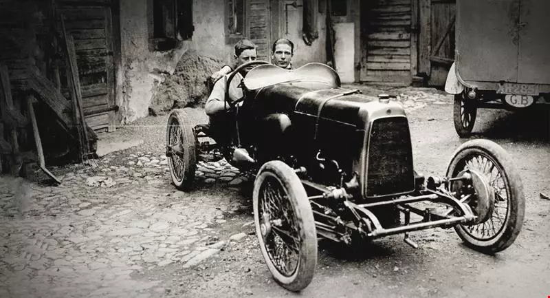

Ever since the first Aston Martin was crafted more than one hundred years ago, we’ve had a talent for creating beautiful. Founded by Lionel Martin and Robert Bamford in 1913 in a small London workshop, Aston Martin has since grown to become an internationally admired luxury brand.
The love of beautiful has always been our guiding principle. And Martin and Bamford’s coming together – our origins as a company – was our earliest expression of it.
Both men had a passion and a talent for machines, propulsion, engines and racing. They had a shared love for the car because it provided them the most exhilarating and memorable experiences. Moments of beauty. Moments that they craved to create, repeat, celebrate and share. That passion drove them to hand build cars that were ever faster, more powerful, thrilling, comfortable – more beautiful – than the previous.

Little wonder then that they named Aston Martin after one singular motoring event in Buckinghamshire, England. A moment of pure driving emotion, when Lionel Martin took on the Aston Clinton Hill Climb race in their latest creation, and won.

From our humble origins to today, on road and track the irresistible draw of an Aston Martin endures. People all over the world seek our beautifully designed cars; cars that have always been synonymous with high performance, bespoke craftsmanship, technological innovation and timeless style.